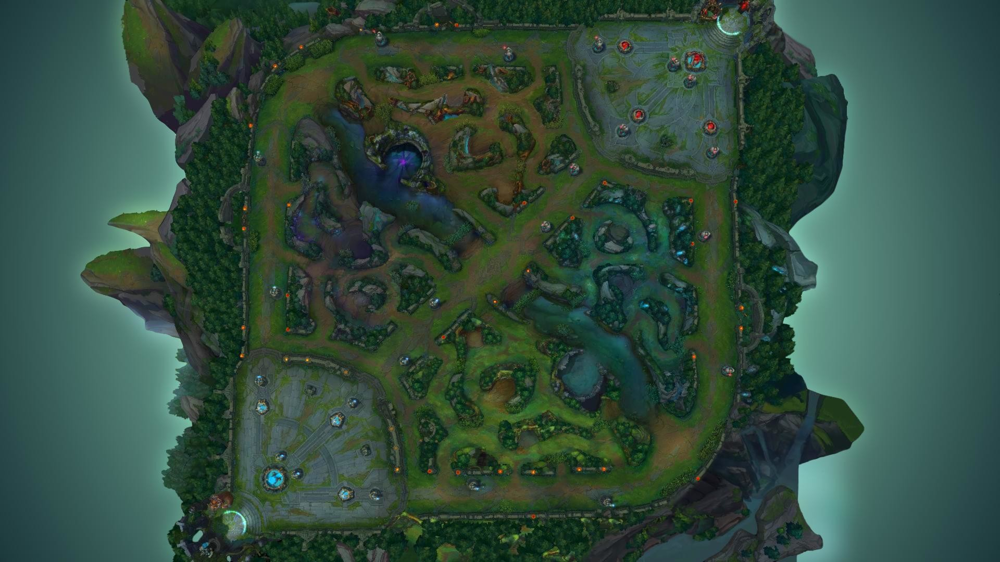

  <div class="jumbotron" id="map container" style="position: relative">
    <h1>Map in Angular</h1>

    <!--Map image-->
        <div (click)="logCursorPosition()" (click)="getCursorPositionX(e)" (click)="getCursorPositionY(e)"></div>
    
  </div>


<!--form appears on marker placement-->
<div class="form-popup" id="myForm">
  <form class="form-container" #mapMarker="ngForm" (ngSubmit)="markerFormSubmit(mapMarker.value)">
    <input type="text"   class="form-control" placeholder="Enter Description" name="description" ngModel>
    <input type="hidden" class="form-control" [(ngModel)]="xPosition" name="xPosition">
    <input type="hidden" class="form-control" [(ngModel)]="yPosition" name="yPosition">

    <button type="submit" class="btn btn-sm">Submit</button>
    <button type="button" class="btn cancel btn-sm" (click)="closeForm()">Close</button>
    <button type="button" class="btn delete btn-sm">Delete</button>
  </form>
</div>
